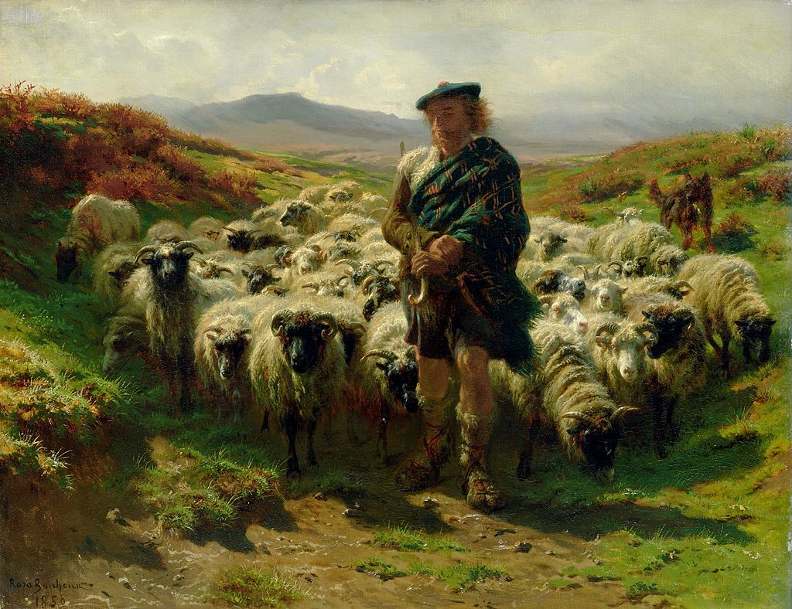

<head>
<meta charset="UTF-8" />
<meta name="keywords" content="drawing, painting" />
<meta name="description" content="drawings by Sunjy" />
<title>Sunjy</title>
<link rel="shortcut icon" type="image/x-icon" href="../../mImages/mCommon/favicon.ico" media="screen" />
<link rel="stylesheet" type="text/css" href="../../mCsses/mCommon/mCssA.css" />
<link rel="stylesheet" type="text/css" href="../../mCsses/mCommon/mCssB.css" />
<link rel="stylesheet" type="text/css" href="../../mCsses/mCommon/mCssC.css" />
<link rel="stylesheet" type="text/css" href="../../mCsses/mCommon/mCssD.css" />
<link rel="stylesheet" type="text/css" href="../../mCsses/mContent/mCssA.css" />
<link rel="stylesheet" type="text/css" href="../../mCsses/mContent/mCssB.css" />
<link rel="stylesheet" type="text/css" href="../../mCsses/mContent/mCssC.css" />
<link rel="stylesheet" type="text/css" href="../../mCsses/mContent/mCssD.css" />
</head>
<script type="text/javascript" src="../../mScripts/mContent/mContentAA.js" /></script>
<script type="text/javascript" src="../../mScripts/mContent/mContentAB.js" /></script>
<script type="text/javascript" src="../../mScripts/mContent/mContentAC.js" /></script>
<script type="text/javascript" src="../../mScripts/mContent/mContentAD.js" /></script>
<script type="text/javascript"></script> 
<script type="text/javascript">
document.write('<div class="mImgAbsolute"></div>');
/*
document.write('<p class="mFontSizeBColor" />From a white paper...</p>');
document.write('<table class="center"><tr><td>');
document.write('');
document.write('</td></tr></table>');
*/
</script>


<script type="text/javascript">
document.write('<p class="mFontSizeBColor" />The Highland Shepherd</p>');
document.write('<p class="mFontSizeSColor" />“The Highland Shepherd” by Rosa Bonheur depicts a Scottish shepherd dressed in the traditional highlander attire of the 1800s. As a realist painter, Bonheur painted scenes in her painting from her first-hand experience.<br><br>Her monumental artworks in France led to international fame and recognition, and as she traveled to Scotland, she met Queen Victoria en route.<br><br>The Queen admired Bonheur’s work, and while in Scotland, she completed sketches for Highland Shepherd. This painting depicts a way of life in the Scottish highlands that was disappearing and had enormous general appeal.<br><br>To depict animals, Rosa Bonheur studied at a Paris slaughterhouse in 1845, a regular activity for an animal painter that she was the first to engage in as a woman.<br><br>She became very popular in England. Bonheur was decorated with the French Legion of Honour in 1865 and was promoted to Officer of the order in 1894, making her the first female artist to be given this award.<br></p>');
document.write('<table class="center" /><tr><td>');
document.write('<br>Her monumental artworks in France led to international fame and recognition, and as she traveled to Scotland, she met Queen Victoria en route.<br><br>The Queen admired Bonheur’s work, and while in Scotland, she completed sketches for Highland Shepherd. This painting depicts a way of life in the Scottish highlands that was disappearing and had enormous general appeal.<br><br>To depict animals, Rosa Bonheur studied at a Paris slaughterhouse in 1845, a regular activity for an animal painter that she was the first to engage in as a woman.<br><br>She became very popular in England. Bonheur was decorated with the French Legion of Honour in 1865 and was promoted to Officer of the order in 1894, making her the first female artist to be given this award.<br>" />');
document.write('</td></tr></table>');
</script>


